Префектура Кумамото · город Кумамото · отель и бары
Ночь в старом Кумамото: отель OMO5, ужин на местных продуктах и бар с коктейлями на сётю
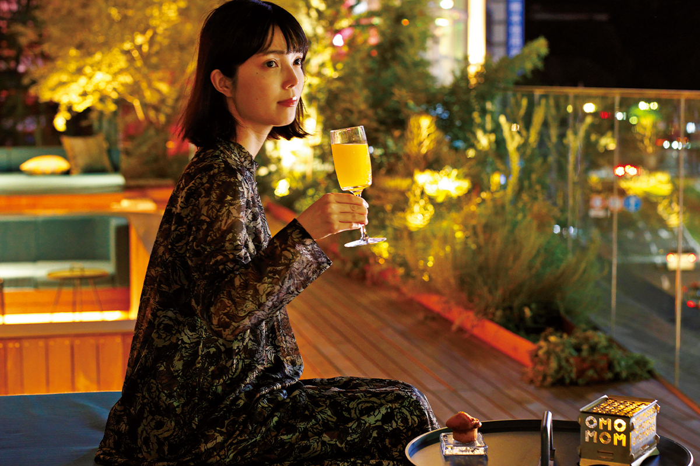
Зайти в бар в незнакомом городе решится не каждый. В Кумамото с этим помогает отель: его сотрудники знают соседние улицы наизусть и подскажут, куда идти, а наутро сами проведут по старому центру.
Город
Кумамото любит всё новое
В Кумамото есть словечко «васамон»: так на местном диалекте называют человека, который первым хватается за всякую новинку. Город и правда рос, подхватывая самое свежее, что приносило время. При этом главная улица, Торитёсудзи, проходит там же, где и в эпоху Эдо: оживлённый проспект бывшего призамкового города за несколько веков не сдвинулся с места.
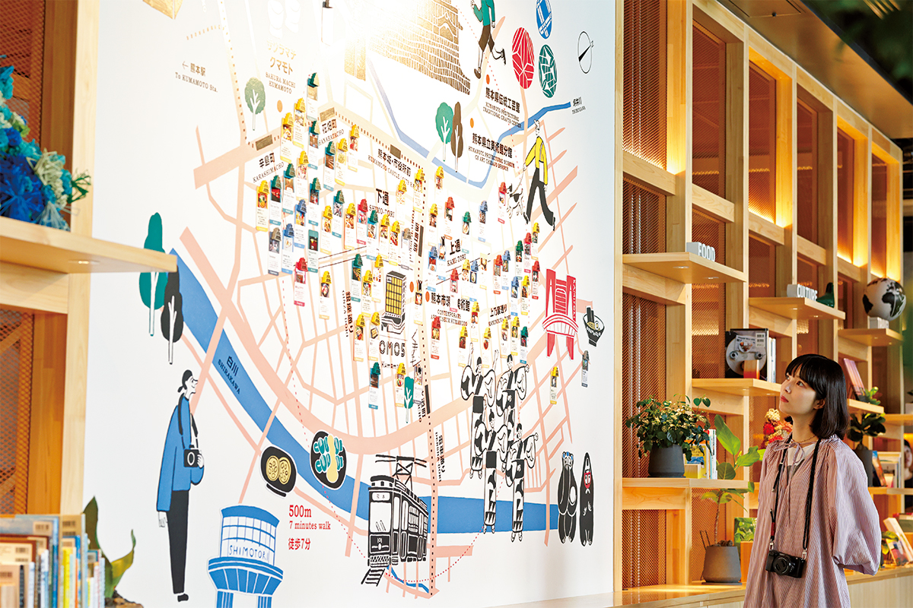
Именно здесь, в самом выгодном месте города, в апреле 2023 года открылся отель OMO5 Kumamoto by Hoshino Resorts. OMO это городская сеть компании Hoshino Resorts: отели, которые задуманы как точка входа в жизнь квартала. В 2024 году их было 15 по всей Японии, а кумамотский стал первым на Кюсю. Здесь впервые для сети появились номера с большим круглым столом и номера, где кровать окружена столешницей. Общая зона «OMO Base» на третьем этаже плавно переходит в торговые этажи здания, с подземного по второй, и горожане приходят сюда просто посидеть.
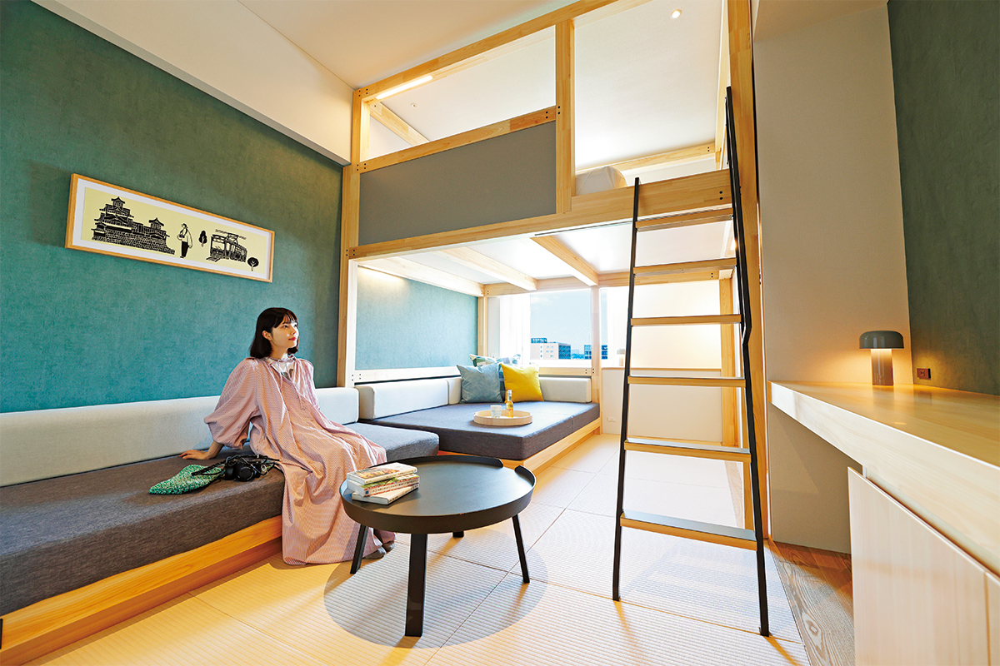
В отель приехала автор популярного YouTube-канала о простой домашней еде на одного. Она уверена, что даже готовка из местных продуктов многое рассказывает о культуре и рынках края. В «OMO Cafe» она устроила передышку и, пока пробовала, зарисовывала блюда в блокнот, чтобы потом повторить дома.
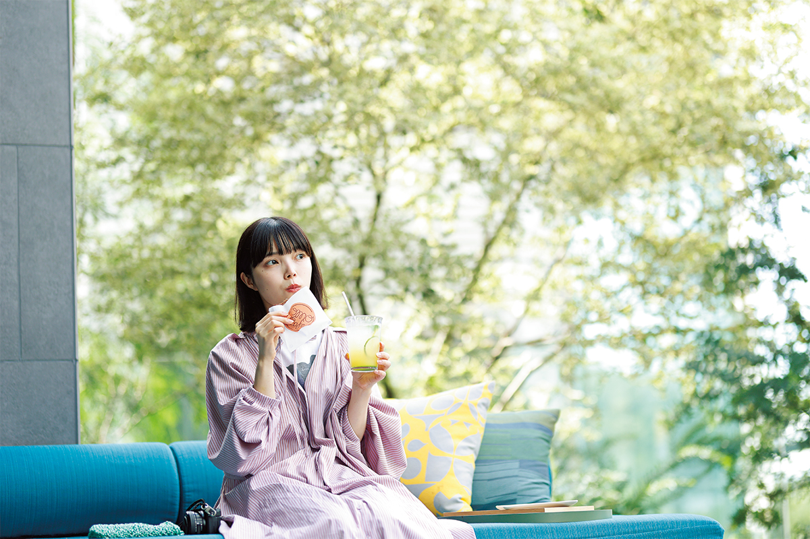
Цель поездки была простая: пожить в отеле и узнать, как в Кумамото ходят по барам. Поначалу гостья признавалась, что ни разу не была в баре: «Чтобы купить одежду, нужна одежда, в которой не стыдно пойти в магазин. С барами у меня так же». Сотрудники отеля охотно советуют заведения под вкус гостя, так что первый выход получается почти без робости. К концу вечера, пройдя от японского ресторана до бара, она явно вошла во вкус.
Номера
Выбирать по устройству
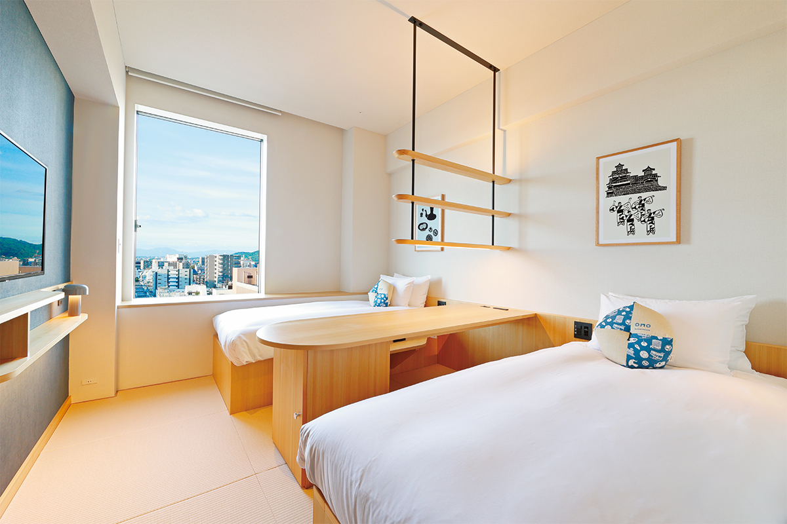
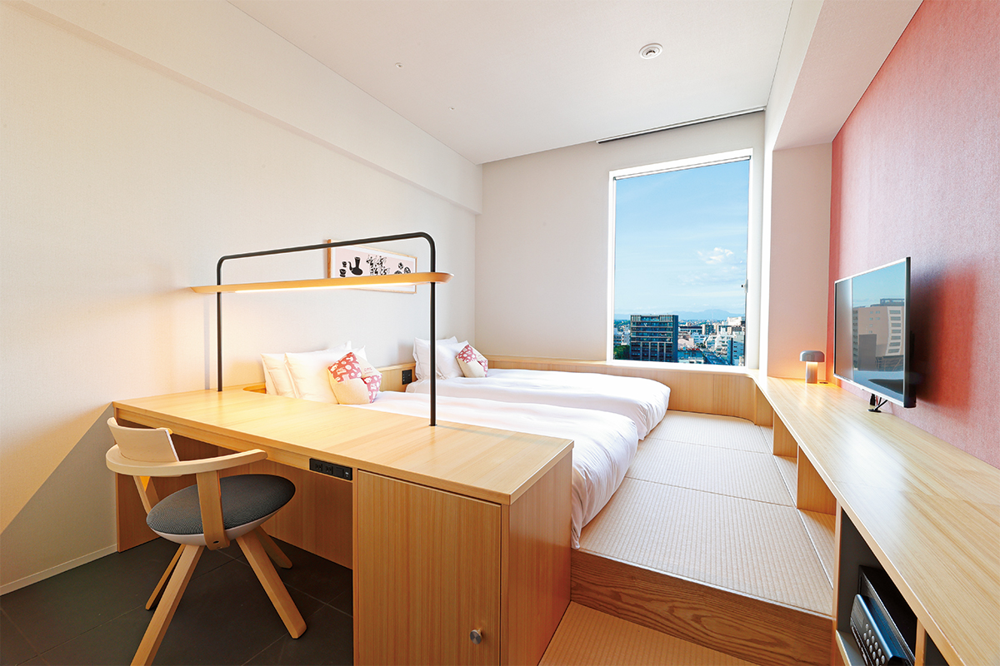
Ужин
Ruri-AN: семь закусок из префектуры
Первая остановка вечера: японский ресторан Ruri-AN. Его команда не только готовит, но и сама выращивает рис. Гостья заказала курс из семи закусок, и всё в нём сделано из продуктов префектуры Кумамото, а к еде здесь предлагают местное вино.
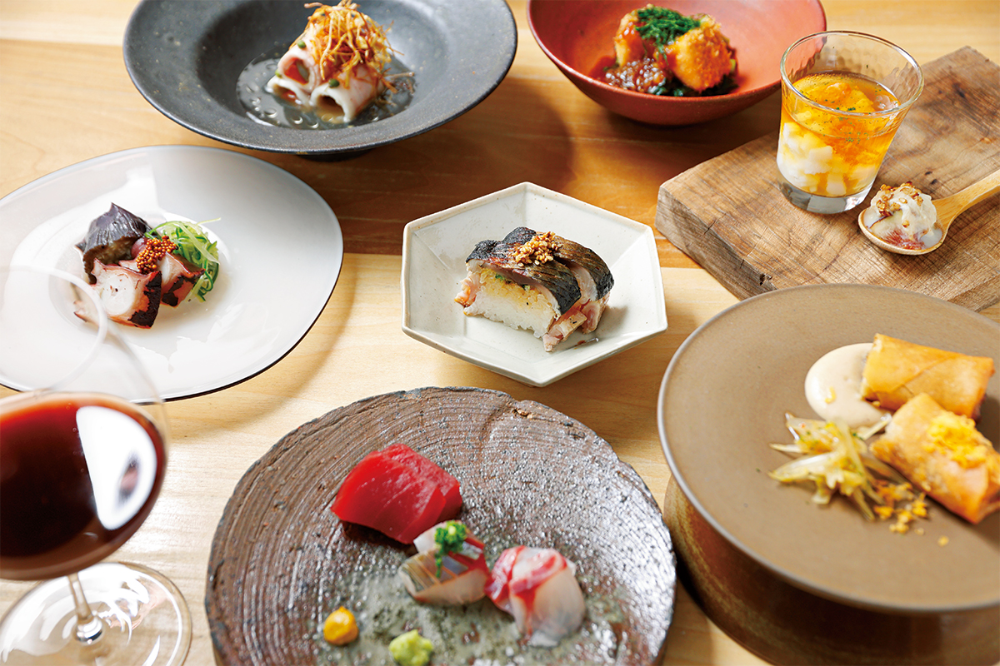
Особенно ей понравилось блюдо из юбы, нежной плёнки соевого молока.
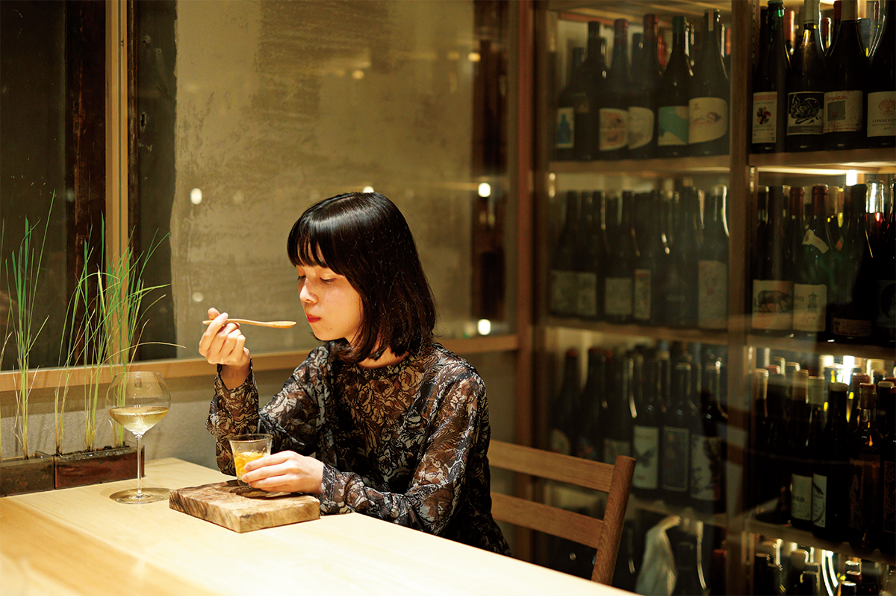
Ruri-AN
- Адрес
- префектура Кумамото, город Кумамото, район Тюо, Минамицубои-мати, 5-21, 2-й этаж
- Сайт
- ruri-an.owst.jp
Коктейль
Бар по соседству, но в отеле
В отеле можно попробовать коктейли соседних баров, не выходя из здания. Программа называется «Кумамото Go-KINJO Bar»: из четырёх коктейлей, придуманных барами-партнёрами, каждый день наливают на пробу один.
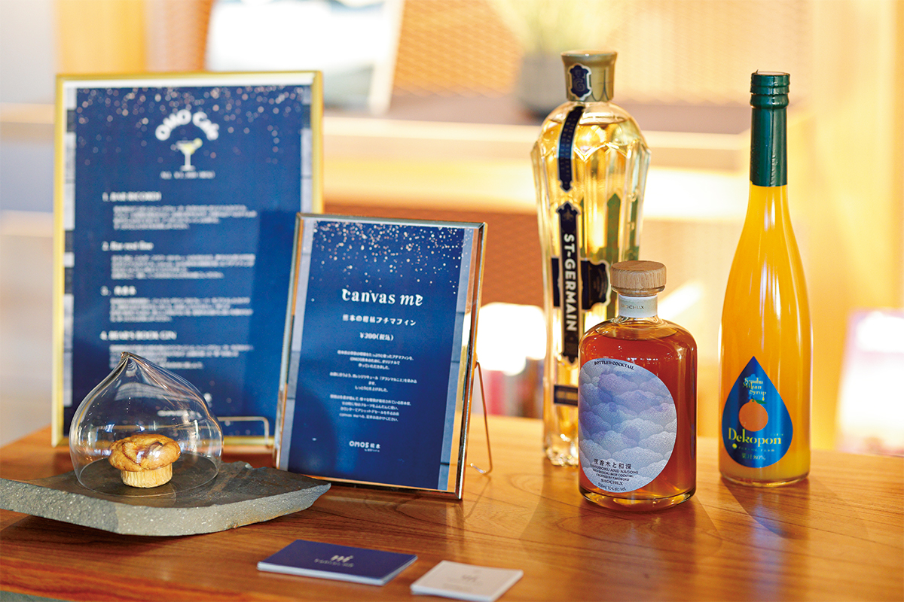
Коктейль «Якобоку» сделан на основе кума-сётю, рисового сётю из района Кума на юге префектуры. Гостья не поверила, что пьёт сётю, и решила закончить вечер там, где этот коктейль придумали.
Финал
Yakoboku: десерт в бокале
Бар Yakoboku носит то же имя, что и коктейль из отеля, и работает с продуктами Кумамото. Место камерное, найти его непросто. Сладкое у гостьи всегда идёт «в отдельный желудок», поэтому она выбрала десертный коктейль.
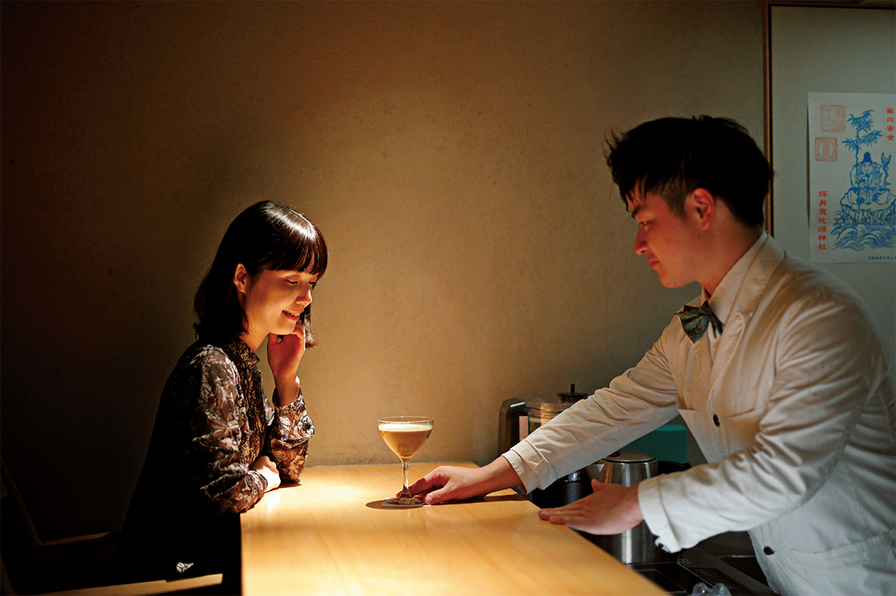
Yakoboku
- Адрес
- префектура Кумамото, город Кумамото, район Тюо, Минамицубои-мати, 5-21, 1-й этаж
Утро
Завтрак без спешки
После долгого вечера утром можно никуда не торопиться и позавтракать в отеле. Одно из блюд придумано по мотивам карасирэнкона, местного корня лотоса, начинённого горчицей.
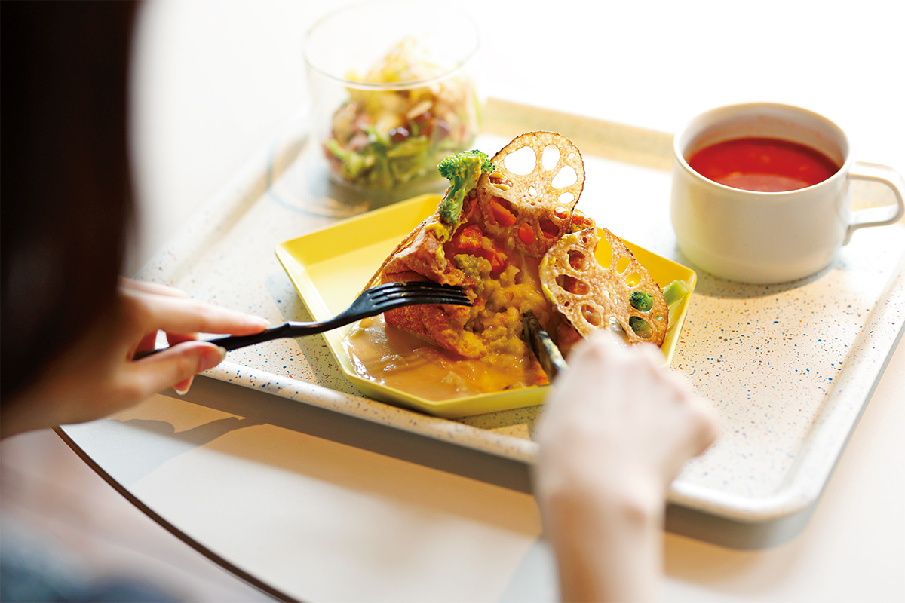
Прогулка
С гидом по Камитори
На следующий день отель отправил гостью на прогулку «Дзёка-мати саруку». «Саруку» на кумамотском диалекте значит «гулять», а «дзёка-мати» это призамковый город. Прогулки по соседним кварталам с гидом есть во всех отелях OMO, а здесь гиды выходят в образе «OMO-рейнджеров».
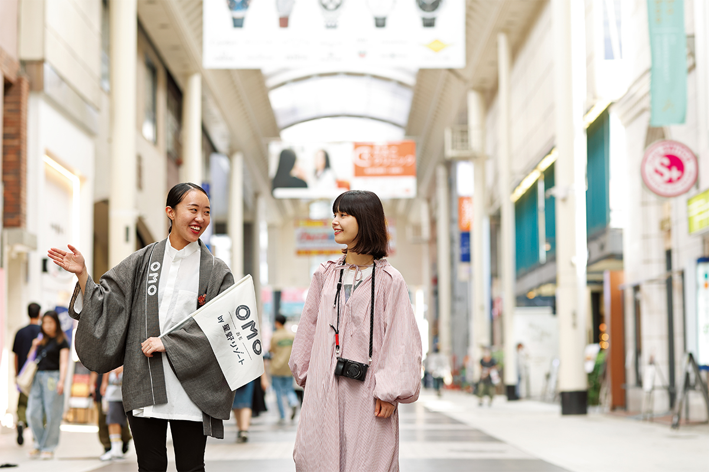
Гостья признаётся, что любит путешествовать так, будто живёт в городе. В центре Кумамото всё рядом, и всё же две главные торговые улицы, Камитори и Симотори, совсем непохожи. На Камитори соседствуют новые лавки, открывшиеся после землетрясения, и магазины, которые работают с эпохи Мэйдзи, поэтому здесь сжато видна вся история города. Гид показал детали, мимо которых легко пройти, и к концу прогулки гостья уже всерьёз прикидывала, не переехать ли сюда.
Пирожок, который едят все
Начинать стоит с того, что в префектуре зовут едой для души. «Хораку-мандзю» начинались с пчеловодства. Очередь у лавки не кончается, но двигается быстро: местные заказывают по цвету начинки, например «тёмных одну, светлых две».
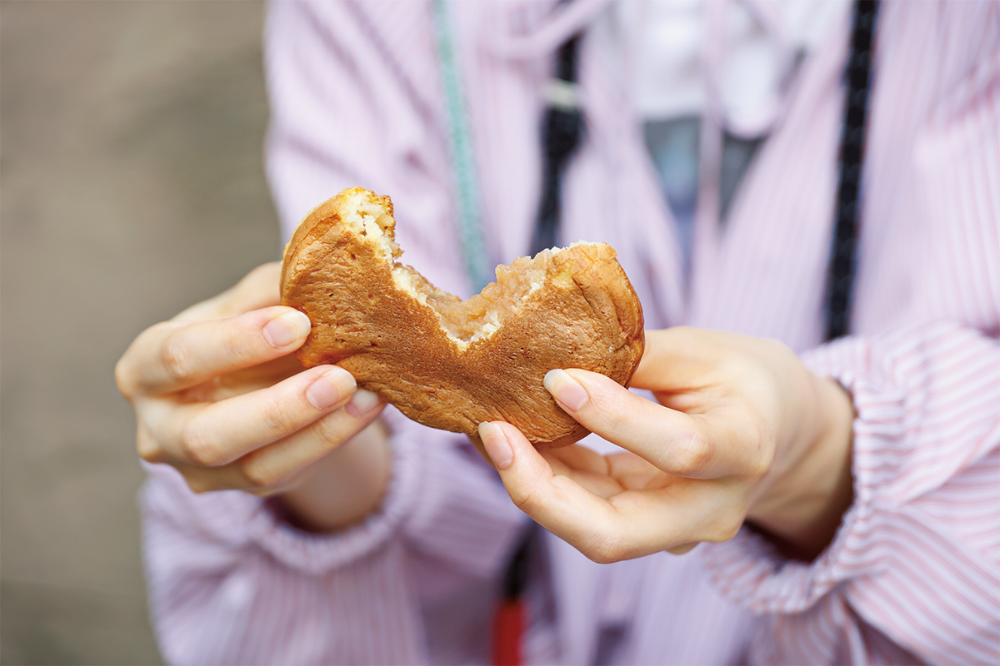
Книжная лавка, где бывал Нацумэ Сосэки
В букинистический магазин «Дзёбундо Кавасима сётэн» заходил Сосэки Нацумэ (1867–1916), классик японской литературы, автор романа «Ваш покорный слуга кот». Гостья признаётся, что часто бывает в букинистических, но сама бы сюда не попала. Среди полок она нашла редкую книгу как раз по своей теме: «Соленья Кумамото».
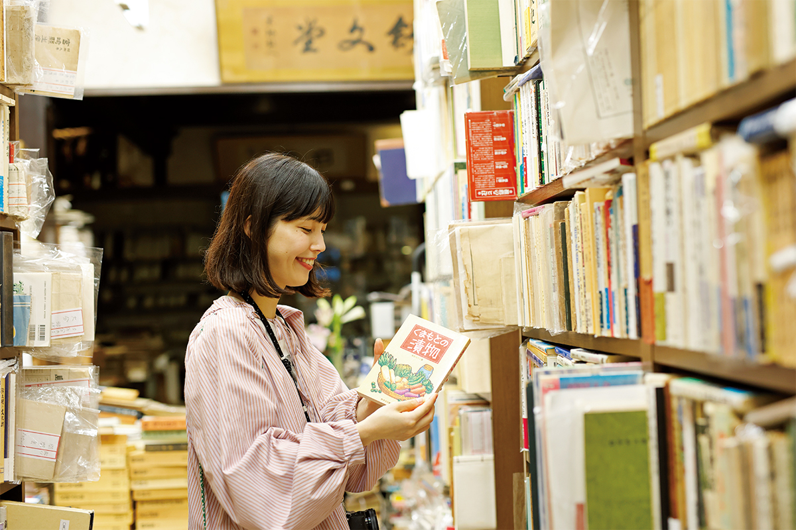
Финиш у статуи, которая потеет
Маршрут заканчивается в святилище Тэтори-тэммангу. Здесь почитают Митидзанэ Сугавару (845–903), учёного и государственного деятеля, которого в Японии чтут как покровителя учёбы. Знатоки нарочно идут не к главному залу, а к небольшому павильону «Асэкаки-дзидзо», «потеющего дзидзо». Говорят, что перед бедой, грозящей городу, камень здесь покрывается испариной, и в этом павильоне собрана вся история Кумамото.
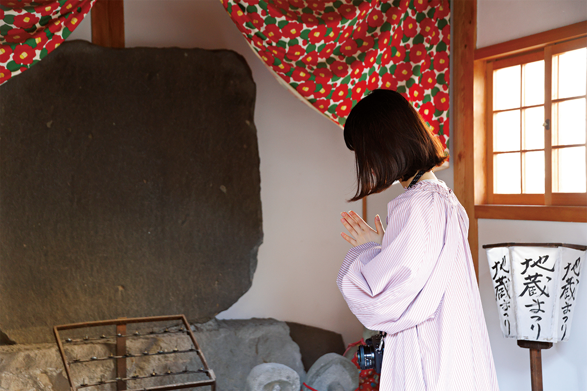
OMO5 Kumamoto by Hoshino Resorts
- Адрес
- префектура Кумамото, город Кумамото, район Тюо, Тэторихонмати, 5-1
- Телефон
- +81 50-3134-8095
- Номера
- 160
- Цены / Вход
- от 18 000 иен за номер за ночь, с налогом и сервисным сбором; ужина нет, завтрак в кафе
- Заезд / выезд
- 15:00 / 11:00
- Как добраться
- около 1 минуты пешком от трамвайной остановки Торитёсудзи; на машине около 20 минут от развязки Кумамото на скоростной дороге Кюсю
Фото: Норихито Судзуки.